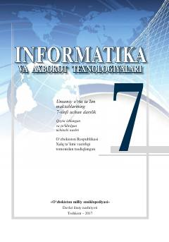

IV7-sinf o'quvchilari uchun informatika va axborot texnologiyalari fanidan darslik.
Ushbu darslik umumiy o'rta ta'lim maktablarining 7-sinf o'quvchilari uchun mo'ljallangan bo'lib, axborot tushunchasi, axborotni to'plash, uzatish va qayta ishlash usullarini o'rgatadi. Kitobda zamonaviy kompyuter texnologiyalari va ularning inson hayotidagi o'rni haqida nazariy hamda amaliy ma'lumotlar keltirilgan.